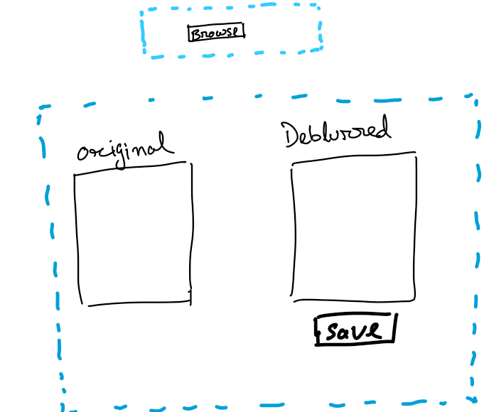
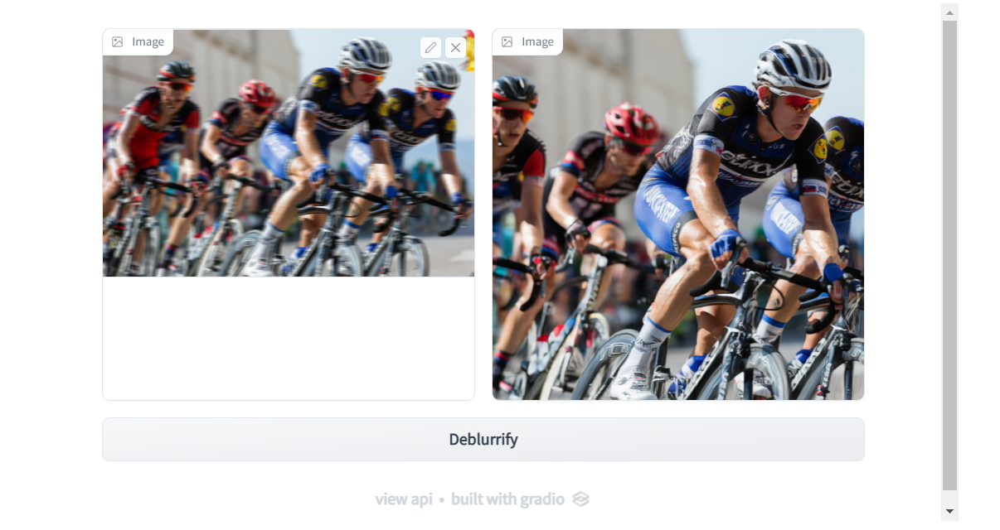

Code
try: import gradio as gr
except ModuleNotFoundError:
!pip install -Uq gradioSatyabrata pal
Last time we trained a model that was able to remove motion blur from our images. In this chapter we are going to create a very basic application through which we can showcase how our users can use the model on their images.
You may be thinking that why we need an app? Well! your target user won’t be firing up your jupyter notebook or your code everytime they need to use your model, right?
The user needs a visual medium through which they can consume the predictions of your model. That’s why we are goign to need an app.
During the initial stages of developing an idea into a usable product, you need to focus on speed of iteration. You need to be able to iterate quickly through many different ways to discover the right thing.
This is because of this reason that during the initial stage you don’t want to go all out while building a user facing interface. You don’t need a fancy GUI or you don’t need to worry about the hardcore software engineering stages. A prototype application will do fine. So, you need a minimal viable product (MVP) to present your idea to the world and to test if your idea resonates well with the need of the user.
You don’t need to be an expert in web designing to build a quick prototype of an application. A little bit of creativity and an open source tool like Gradio is all you need.
Gradio is an open source library to quickly build web apps for your machine learning model using python.
A good interface provides a good user experience. A state-of-the-art model with an user interface with below average usage experience will not provide any value to the user.
So, a design which provides the required ease of usage is a must even during the prototype stage. Of course, the design of the prototype can be kept simple but some basic user experience elements like ease of use should be taken into consideration.
So, the first thing that we are going to do is to start with a basic design.
In a real life project you may not need to create designs yourself as bigger projects/organization usually have separate experts, but in some cases you may need to wear the hat of the designer as well.
Below is a hand-drawn design of the prototype UI.

Basically it has a browse button to upload your images (which needs deblurring) and a preview space with a comparison view of the original image and the deblurred image. I would also want to have a button to save the deblurred image.
In a real project you may wan to use tools like “vision” to create UI designs before presenting that to the stakeholders (customers, teams etc.)
First let’s import the required libraries.
We will use the model that we had trained in chapter1. We will use the same dataloaders and learners which we used in the previous schapter.
As is the usual drill, I will create a config dictionary.
I have created a quick function below which contains all my transformations and dataloaders from chapter1. If refer the previous chapter, you will notice that all the code used is the same. It’s just that here I have combined those into a single function.
def get_dls(sz:int,bs:int, src):
item_tfms = Resize(sz)
batch_tfms = [*aug_transforms(max_zoom=2.), Normalize.from_stats(*imagenet_stats)]
get_y = lambda x: x.relative_to(config['path_crappy'])
files_crappy = get_image_files(src)
dls= get_unet_dls(bs, source = files_crappy, get_y = get_y,
splitter = RandomSplitter(), item_tfms = item_tfms,
batch_tfms = batch_tfms)
return dlsFor line 4 you would need to make sure that your target images(the non-crappified images), needs to be in a path that is relative to the path where the crappified images are stored. Now if you are coming to this chpater from chapter1 then you would be having the crappified and non-crappified images in relative paths.
I have another function here which creates a unet learner and loads the model that we trained in the previous chapter.
Now, I will create the dataloaders. I will pass an image size of 860 to my get_dls functions and a batch size of 8. It’s not necessary to keep the batch size same to what you had kept during the trainign time. You can change the batch size. while training the model (in chapter1) we used a final image size of 256px. Here, during inference time I would like to “debluurify” an image bigger than that. Although, I can have the original “big” size of an image but somehow it crashes the jupyter kernel as soon as prediction is performed by the model. It might be due to limited gpu memory. So, a size of 860px works good enough for experiment.
Feel free to play around with bigger image size and let me know your findings by posting it on twitter (@thecodingprojec).
Next, let’s create the learner by passing the dataloaders and the model trained in chapter 1.
You will need to pass the path where you have stored the crappy files which you had used to train your model.
I have created a function to get the prediction and save that onto the disk.
Make sure to have your final model in the “models” directory and pass the same path to the get_inf_model above.
The save_pred takes in the source image path, the destionation path and the learner. In line 4 the source image is passed onto the learner and the prediciton is stored in pred. pred is actually a tuple of three things out of which we need only the first item in this tuple i.e. the generated image.
First of all we need a function which would trigger the prediction for us, save it to the disk and then return the path. save_pred from the previous section would take care of generating and saving the prediction. We will wrap this in another function which would then return the path of the generated image.
Next, we use gradio code to create our Ui components.

In line 1 we ask gradio to initiate something known as “Blocks”. This is an API in gradio which let’s you have more flexibility while creating UI elements. In line 2 we ask gradio to create rows in which we would want to place our UI elements and then in line 3 and 4 we create Image boxes. One image box for our input image and one image box for displaying our output. After this in line 5 we create a button. In line 6 we tie in everything together. Whenever user clicks on the button, display_result function is called with the image from the first image box (defined in line 3) as input and then the generated image will be displayed in the image box define in line 4.
Now, go ahead and test the UI by dragging on an image of you choice (which has motion blur) and then clicking on the “Deblurrify” button.
What we have created here is a very early stage prototype application. You will notice that the UI that we created is exactly not same as the design that we imagined but that’s okay in current context. We will iterate on it later on to bring it close to the design.
You will also notice that the app code and the supporting code is not suitable enough to be hosted somewhere. For example, we still need to re-create the dataloaders and learner before prediction. This is cumbersome as we would need to re-create the same directory structure of our input data and target data wherever we want to host of app. Also, moving the training data around whenever we want to host our app is not a good way to do things.
At the current state since we are testing out our idea, the current state of our code and app is good enough. In the next chapter we would explore some more things like testing a few edge cases to find out where our model fails, optimize our training code further so that trying out different experiments becomes more easier.